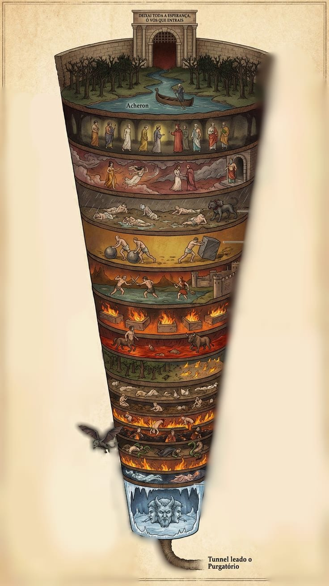

Antesala del mal
Antes de entrar al Infierno están los indecisos y cobardes, almas que en vida no eligieron ni el bien ni el mal con firmeza.
La entrada al Infierno no tiene puertas ni obstáculos. El Infierno tiene forma de cráter, como un embudo, creado tras la caída de Lucifer. Antes de entrar se encuentra la antesala del mal, donde están los indecisos y cobardes que no tomaron partido.
El descenso empieza en la antesala, cruza el Aqueronte y avanza hacia los círculos del castigo.
Antes de entrar al Infierno están los indecisos y cobardes, almas que en vida no eligieron ni el bien ni el mal con firmeza.
Una multitud espera en el río Aqueronte a Caronte, el barquero. Tras cruzar el río aparece Minos, juez infernal que dicta la sentencia del alma pecadora y el círculo al que irá.

Aquí están las almas de los no bautizados y paganos virtuosos, como Homero y Platón. No hay dolor físico, solo desesperanza.
En el valle de los vientos están quienes se dejaron llevar por las pasiones. Sus almas son arrastradas por vientos incesantes que golpean sus cuerpos.
Cae una lluvia helada y sucia. Allí destaca Cerbero, el perro de tres cabezas, mientras los glotones permanecen hundidos en el barro que es su vomito.
Quienes derrocharon y quienes acumularon dinero pasan la eternidad empujando grandes pesos de un lado a otro, intercambiando maldiciones por sus naturalezas opuestas.
Una cascada de sangre hirviendo llega al río Estigia. En sus aguas los furiosos se atacan entre ellos, mientras los rencorosos intentan gritar desde el fondo.
Aquí están las tres Erinias o Furias y los ángeles caídos que custodian la gran puerta. Este lugar separa los pecados culposos de los pecados intencionales.
En el cementerio de fuego están los herejes: quienes negaron la existencia de Dios o rechazaron sus enseñanzas arrastrando a los credulos con ellos. Arden en tumbas abiertas mientras se lamentan.
Este círculo castiga a quienes usaron la fuerza para destruir o dañar. Se divide en tres zonas: los violentos contra el prójimo, los violentos contra sí mismos y los violentos contra Dios, la naturaleza o el arte.
Los primeros hierven en un río de sangre y minotauros les disparan flechas; los suicidas aparecen transformados en árboles heridos, y los blasfemos o violentos contra lo divino padecen bajo una lluvia de fuego.
Este círculo se conoce como Malebolge y está dividido en diez fosas para distintos tipos de defraudadores.
Primera fosa: seductores y libertinos que engañaron para satisfacer sus deseos; son acosados por demonios con cuernos.
Segunda fosa: aduladores y engañadores de palabra, hundidos en estiércol por sus halagos falsos.
Tercera fosa: practicantes de la simonía, enterrados boca abajo con las piernas expuestas y asados por velas.
Cuarta fosa: adivinos que pretendían ver el futuro; tienen la cabeza vuelta hacia atrás y lloran desesperados.
Quinta fosa: corruptos que hierven en alquitrán y son atacados por demonios cuando intentan salir.
Sexta fosa: hipócritas con capas bellas pero pesadas; aquí aparece Caifás, quien incito la crucificcion de Jesús.
Séptima fosa: ladrones atacados por serpientes que les arrebatan su humanidad y su carne.
Octava fosa: malos consejeros, ardiendo en llamas por guiar a otros hacia el mal.
Novena fosa: sembradores de discordia, heridos por demonios por dividir familias, crear conflictos y romper la unidad de la Iglesia.
Décima fosa: falsificadores cubiertos por enfermedades y pestilencias según la gravedad de su delito.
Aquí está el lago Cocito, también llamado lago de las lamentaciones. Es el punto más profundo del Infierno: no es caliente, sino helado. En sus aguas lloran los traidores.
Hay cuatro clases de traición: quienes traicionaron a su familia, a la patria, a la hospitalidad y a sus amos o benefactores.
En el centro está Lucifer, el mayor de todos los traidores, porque traicionó a Dios. Permanece en el hielo masticando a los tres grandes traidores de la historia según Dante: Judas, Bruto y Casio.